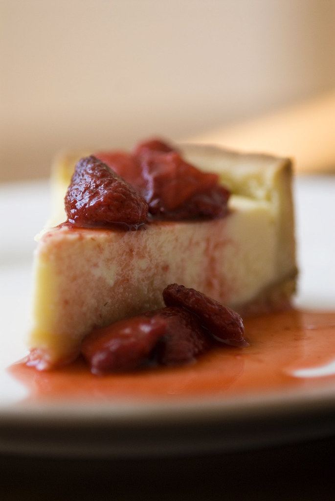

Strawberry Cheesecake Recipe
Return to Homepage

Description
In the mood for a delicious dessert? This lovely strawberry cheesecake
recipe is sure to do the trick! With a graham cracker crumb coated crust and
a sweet filling loaded with strawberries, this 12 serving cheesecake is sure
to serve as great dessert for the whole family. When stored properly in the
refridgerator, it can even be enjoyed for 3 days!
Ingredients
- For the crust: graham cracker crumbs, butter, white sugar, and
cinnamon.
- For the filling: frozen strawberries, cornstarch, cream cheese,
sweetened condensed milk, lemon juice, vanilla extract, and eggs.
Steps
- Gather all ingredients.
- To make the crust: Combine graham cracker crumbs, butter, sugar, and
cinnamon in a bowl; mix well. Press onto the bottom of an ungreased
9-inch springform pan. Place in the refrigerator to chill for 30 minutes.
Preheat the oven to 300 degrees F (150 degrees C).
- To make the filling: Place strawberries and cornstarch into a blender;
cover and puree until smooth.
- Pour strawberry sauce into a saucepan and bring to a boil over high
heat. Boil and stir until sauce is thick and shiny, about 2 minutes.
Set aside 1/3 cup strawberry sauce; cool. Cover and refrigerate remaining
sauce for serving.
- Beat cream cheese in a mixing bowl with an electric mixer until light
and fluffy; gradually beat in condensed milk. Mix in lemon juice and
vanilla extract, then beat in eggs on low speed until just combined.
- Pour 1/2 of the cream cheese mixture over crust; drop 1/2 of the reserved
strawberry sauce by 1/2 teaspoonfuls on cream cheese layer.
- Carefully spoon remaining cream cheese mixture over sauce; drop remaining
strawberry sauce by 1/2 teaspoonfuls on top.
- Cut through the top layer only with a knife to swirl strawberry
sauce
- Bake in the preheated oven until the center is almost set, 45 to 50
minutes
- Cool on a wire rack for 10 minutes. Carefully run a knife around the
edge of the pan to loosen; cool for 1 hour at room temperature.
Refrigerate at least 4 hours to overnight before serving.
- Serve reserved strawberry sauce with cheesecake. If sauce is too
thick, stir in water.
Original Source
- Website:
allrecipes
- Submitted by: Kathy Higgins
- Last Updated: March 4th, 2026